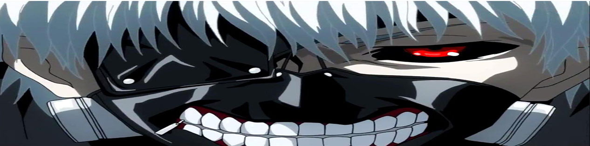

Tokyo Ghoul («Токійський гуль»)
Tokyo Ghoul («Токійський гуль») — манґа в жанрі темне
фентезі Суї Ішіди. Випускалася в
сейнен-журналі Weekly Young Jump видавництва Shueisha з вересня 2011 року по вересень 2014 року
і зібрана в
танкобон з 14-ти томів. Приквел під назвою Tokyo Ghoul [Jack] публікувався онлайн на Jump Live в 2013 році і
складається з одного тому. Сиквел під назвою Tokyo Ghoul:re випускався
в Weekly Young Jump з жовтня 2014 по
липень 2018, зібраний в танкобон з 16-ти томів.
2014 року манґа отримала аніме-адаптацію від студії
Pierrot, прем'єра відбулася 4 липня.
Зміст
- Сюжети
- Сюжет Tokyo Ghoul
- Сюжет Tokyo Ghoul √А
- Сюжет Tokyo Ghoul: re
- Сюжет Tokyo Ghoul: re 2
- Персонажі
- Примітки
- Посилання
Сюжет Tokyo Ghoul
Кен Канекі — вісімнадцятирічний студент університету, який внаслідок нещасного випадку потрапляє до лікарні, де
йому незаконно пересаджують органи одного з гулів, щоб врятувати йому життя.
Для того, щоб вижити, гулям
необхідно харчуватися людською плоттю, тому вони вбивають людей або знаходять тіла самогубців. Через таку
пересадку органів Канекі стає лише напівгулем, але
харчуватися людською плоттю йому необхідно як і всім.
Канекі
прагне зберегти свою людяність, намагаючись зберегти зв'язок зі світом людей, занурившись у співтовариство
гулів.
Сюжет Tokyo Ghoul √А
Tokyo Ghoul √А — другий сезон аніме-адаптації манґи від студії Pierrot з альтернативним сюжетом, що йде врозріз
з манґою. Сюжет бере свій початок після битви Канекі та Яморі. Старші слідчі
CCG продовжують битву з
«Одноокою
Совою» але програють та відступають. В цей час Канекі рятує Току від Аято і вступає з ним у бійку. Битву
перериває Норо, забравши Аято. Штаб «Аоґірі»
починає обвалюватися. Вибравшись звідти, Канекі говорить Тоці,
що
покидає «Антейку» та йде в «Аоґірі».
Сюжет Tokyo Ghoul: re
Дія відбувається приблизно через три роки після закінчення Tokyo Ghoul √А . Після вторгнення CCG у кафе
«Антейку» Канекі Кен зник. CCG створює новий загін, що складається з людей, яким
вживили у тіло квінкі.
Головний герой манґи, Сасакі Хайс — наставник цього загону і за сумісництвом слідчий, який займається виловом
гулів або ж їхнім знищенням, разом з його помічниками
Муцукі Тоору, Уріє Кукі, Шіразу Ґінші та Йонебаяші
Сайко.
Сюжет Tokyo Ghoul: re 2
До Канекі поступово почала повертатись пам'ять. Він організовує спілку "Коза", після цього виходить за Тоуку Кірішиму. Під час весілля на гулів нападають нові квінкси.